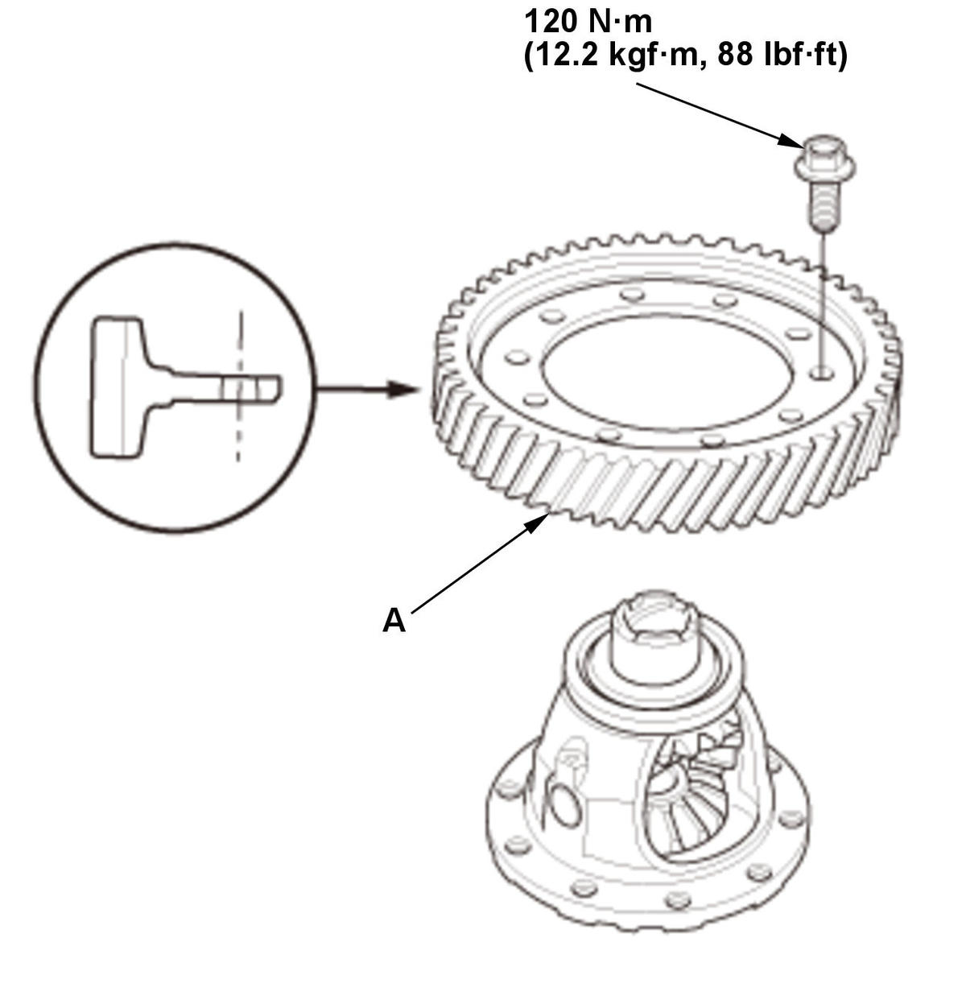

Removal and Installation
WARNING: This page is about a different variant/trim than selected.
- Differential Carrier Bearing - Remove
- Final Driven Gear - RemoveFig 1: Loosening And Tightening Final Driven Gear Bolts In Crisscross Pattern In Several Steps With Torque Specifications (Except Type-R/Si - M/T)

Courtesy of HONDA, U.S.A., INC.1. Loosen the bolts in a crisscross pattern in several steps, then remove the bolts and the final driven gear (A). - All Removed Parts - Install
1. Install the parts in the reverse order of removal.
NOTE:- Tighten the bolts in a crisscross pattern in several steps.
- Make sure the final driven gear is installed in the correct direction.